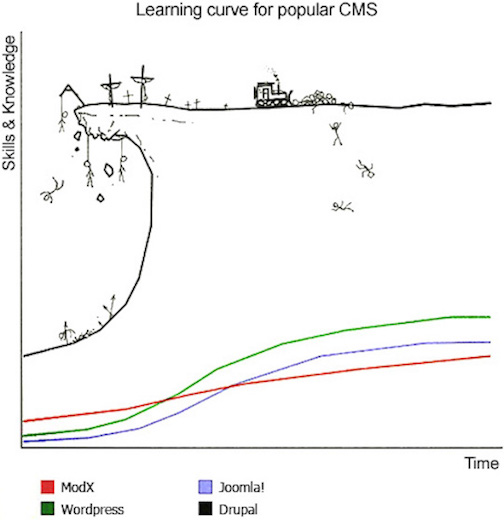
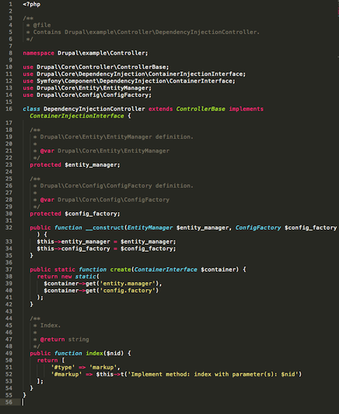
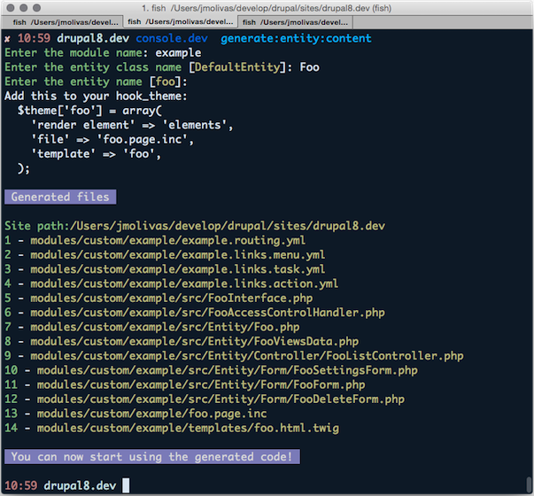

Drupal 8 Console
scaffolding module generator
DrupalCon Latin America 2015
Speeding up Drupal 8 development using Drupal Console
About David Flores

About Jesus Manuel Olivas

What is the Drupal Console?
The Drupal Console is an effort to bring The Symfony Console Component to Drupal 8.
The purpose of this project is to leverage the Symfony Console Component.
The Console is a CLI tool that automates the creation of Drupal 8 modules and other recurring tasks.
Who started this?
Jesús Manuel Olivas
@jmolivas
David Flores
@dmouse
But you can blame him
Why should you care about it?
Drupal learning curve
Drupal 8 learning curve
A lot of new concepts

A lot of code to write
A lot of directories & files
How does it help?
Out of the box
- Generates module and info files.
- Generates PSR-4 compliant directory structure for a module.
- Registers routes on YML files and maps to controllers and forms in PHP Classes.
- Creates classes adding namespaces, uses and also extends and implements keywords when required.
- Supports adding services using Dependency Injection on class generation.
Other commands
- Lists and shows configurations.
- Lists registered services on the service container.
- Lists registered routes on the routing system.
- Rebuilds routing system cache.
- Rebuilds site caches.
Who will benefit from using it?
Module Maintainers & Developers
Create & Migrate contributed modules to Drupal 8.
Drupal Trainers & Consultors
Train developers on Drupal 8.
Drupal Shops
Reduce module development time for Drupal 8.There are similar projects
- Module Builder
https://www.drupal.org/project/module_builder - Drupal Module Upgrader
https://www.drupal.org/project/drupalmoduleupgrader - Drupal 8 Tools
https://github.com/anavarre/drupal-8-tools - A code generator for Drupal https://github.com/danmatthews/drupal-code-generator
What are the differences?
- Takes advantage of the Symfony Console Component.
- Takes advantage of the Twig Component in order to generate PHP, YML and other files.
- Takes advantage of OOP and modern development practices.
- No plans to support previous versions of Drupal.
DISCLAIMER
We are happy to contribute to other projects but the foundations of the Console project are OOP and Symfony components (console, twig, etc).
Where do I find the project?
Project Landing page
Do you have a Drupal user account?
https://drupal.org/project/console
Do you have a Github account?
How about docs and help?
Documentation book at:
http://hechoendrupal.gitbooks.io/drupal-console/
Please RTFM and then ping us at:
https://gitter.im/hechoendrupal/DrupalAppConsoleHow to download Console
Using the Installer
Install the Console locally by running the installer in your project directory:
$ curl -LSs http://drupalconsole.com/installer | php
Access console from anywhere on your system
$ mv console.phar /usr/local/bin/drupal
You can now execute console using:
$ drupal generate:module
Using the Installer video
Using Composer
You can use composer to install console globally using the following command:
$ composer global require drupal/console:@stable
Add the binary directory to your class path
$ echo "PATH=$PATH:~/.composer/vendor/bin" > ~/.bash_profile
You can now execute console using:
$ console
Download the phar file
You can download the latest version of Console from the repository releases page at:
https://github.com/hechoendrupal/DrupalAppConsole/releases
Make sure you download the console.phar file from the most current release.
$ php console.phar
Updating the project
The easiest and recommended way of updating Console is using the self-update command.
Depending on the download method:
$ drupal self-update
$ console self-update
$ php console.phar self-update
Available Commands
Generators
generate
generate:authentication:provider Generate an Authentication Provider
generate:command Generate commands for the console.
generate:controller Generate & Register a controller
generate:entity:config Generate a new "EntityConfig"
generate:entity:content Generate a new "EntityContent"
generate:form:config Generate a new "ConfigFormBase"
generate:module Generate a module.
generate:plugin:block Generate a plugin block
generate:plugin:imageeffect Generate image effect plugin.
generate:plugin:rest:resource Generate plugin rest resource
generate:service Generate service
generate:module - video
generate:service - video
* container:debug* cache:rebuild
generate:controller - video
generate:form:config - video
* router:debug* router:rebuild
generate:plugin:block - video
generate:plugin:rest:resource - video
generate:entity:content - video
Other commands
drush Run drush from console.
self-update Update the console to latest version.
cache
cache:rebuild Rebuild and clear all site caches.
config
config:debug Show the current configuration.
container
container:debug Displays current services for an application.
migrate
migrate:debug Display current migration available for the application
migrate:execute Execute a migration available for application
module
module:debug Display current modules available for application
module:download Install module or modules in the application
module:install Install module or modules in the application
module:uninstall Install module or modules in the application
rest
rest:debug Display current rest resource for the application
router
router:debug Displays current routes for the application
router:rebuild Rebuild routes for the application
shell + drush - video
config:debug - video
router - video
module - video
* webprofiler (contributed)How to contribute
Contribute code
https://github.com/hechoendrupal/DrupalAppConsole
Contribute documentation
https://github.com/hechoendrupal/drupal-console-bookProject Requirements
http://hechoendrupal.gitbooks.io/drupal-console/content/how-to-contribute/project-requirements.html
Getting the project
Fork your own copy of the Console repository
https://github.com/hechoendrupal/DrupalAppConsole/fork
Get a copy of your cloned repository in your machine.
$ git clone git@github.com:[your-git-user-here]/DrupalAppConsole.git
Download dependencies via componser.
$ cd /path/to/DrupalAppConsole
$ composer update --no-dev
Running the project
After using composer to download dependencies execute:
$ bin/console
Access console from anywhere on your system:
$ sudo ln -s /path/to/DrupalAppConsole/bin/console /usr/local/bin/console.dev
To create a Phar file base in your dev version execute:
$ cd /path/to/DrupalAppConsole
$ box build